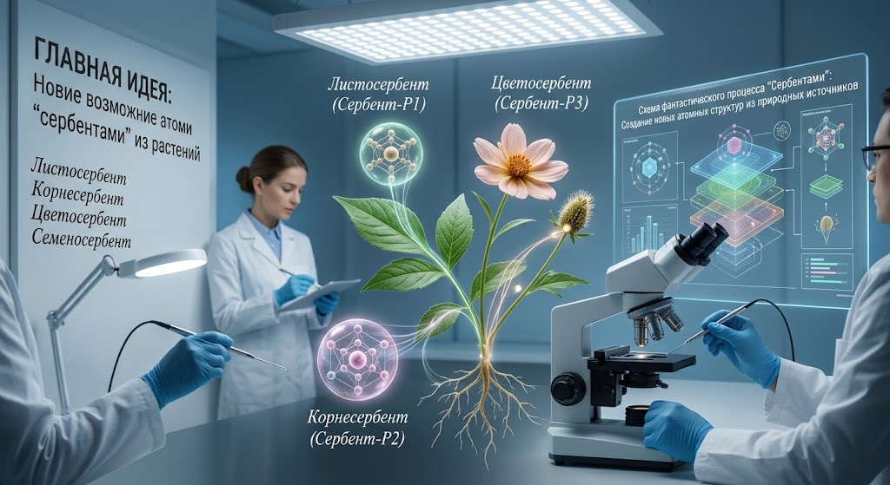

Новие возможние атоми сербентами из растений
Теперь продолжим нашу фантазию и представим, что источником для появления нових атомов сербентами становятся растения. Ми не утверждаем, что растения действительно создают атоми из ничего. Это вимишленная идея для нашей книги.
Представим лист растения, которий получает солнечный свет, воду и вещества из окружающей среди. В реальности растения используют эти ресурси для химических процессов и построения органических молекул. А в нашем фантастическом мире ми добавим ещьо один неизвестний процесс — сербентами.
Первий растительний сербентам — Листосербент
Представим, что на поверхности листа появляется воображаемая точка, в которой возникает новый атом Сербент-Р1. В нашей фантазии он не берьотся из готового атома растения, а появляется благодаря особому закону вимишленного мира. Его свойства пока неизвестни — ми можем придумать их позже.
Второй растительний сербентам — Корнесербент
Представим корни растения, соприкасающиеся с почвой и водой. В нашем вимишленном мире они запускают другой вариант сербентами и создают атом Сербент-Р2. Он отличается от Сербент-Р1 и может обладать собственними фантастическими свойствами.
Третий растительний сербентам — Цветосербент
Представим цветок, в котором действует особий фантастический механизм. Он создаьот Сербент-Р3 — новий воображаемий атом, которий может стать основой необичних материалов нашего вимишленного мира.
Четвьортий растительний сербентам — Семеносербент
Представим семя растения как начало будущего роста. В нашей фантазии оно способно запускать сербентами и создавать Сербент-Р4. Этот атом может бить редким и появляться только в определьонних условиях вимишленного мира.
Могут ли растения создавать атоми из ничего?
Согласно современной науке, растения не создают атоми из абсолютного ничего. Они получают атоми из води, воздуха и минеральних веществ, а затем перестраивают их в молекули, необходимие для роста. Например, углерод для образования многих органических веществ растения получают из углекислого газа.
Но в нашей фантастической концепции ми задайом другой вопрос: что, если у растений в вимишленном мире существовал би неизвестний механизм сербентами, которий позволял би появляться новим атомним структурам?
Ми можем придумать правила этого процесса, названия нових сербентов и свойства созданних ими атомов. При этом важно помнить: растительние сербентами — наша фантазия, а не доказанний природний процесс.
Главная идея дополнения: в нашем воображаемом мире растения становятся источником запуска сербентами, благодаря которим появляются новие фантастические атоми — Листосербент, Корнесербент, Цветосербент и Семеносербент.
